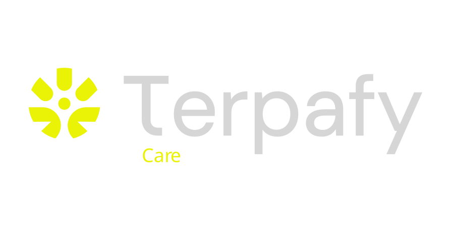
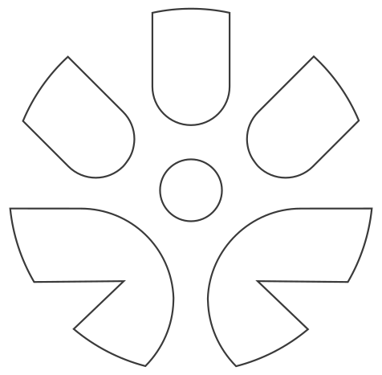

Problema
Quando cada parte da cadeia opera isolada, o valor se perde entre etapas. O cultivador não enxerga desfechos clínicos, o médico não acompanha a consistência do lote e o paciente sente variação no resultado.
Identidade Visual · 2026
Uma identidade criada para traduzir conexão, ciência e cuidado em um sistema visual estratégico, capaz de sustentar uma marca global em construção.



01 · Contexto
O ponto de partida do projeto foi uma indústria em expansão, mas ainda fragmentada: cultivo, prescrição, acompanhamento clínico, associações e serviços operam em silos, com baixa integração de dados e pouca previsibilidade.
Quando cada parte da cadeia opera isolada, o valor se perde entre etapas. O cultivador não enxerga desfechos clínicos, o médico não acompanha a consistência do lote e o paciente sente variação no resultado.
A Terpafy posiciona a marca como uma infraestrutura de conexão: um ecossistema capaz de transformar fragmentação em inteligência integrada, da semente ao paciente.
A tese da marca parte da ideia de que o verdadeiro potencial da cannabis só pode ser alcançado quando dados de cultivo, cuidado e pesquisa conversam entre si, criando um ciclo contínuo de aprendizado.
02 · Estratégia
Uma marca-mãe que organiza divisões, serviços e dados sob uma lógica de plataforma integrada, afastando a Terpafy de soluções isoladas por vertical.
03 · Sistema visual
A síntese entre cannabis, abraço e nascer do sol estrutura uma linguagem visual expansível. O sistema cria planos de fundo, ritmo, composição e assinatura institucional.
Núcleo biológico do ecossistema e origem da cadeia de valor.
Acolhimento, proteção e responsabilidade no cuidado.
Início, renovação e avanço para uma nova categoria.
04 · Paleta interativa
Clique em uma cor para ver seu papel no sistema visual da marca.
#F2594B
Energia e ação. Representa movimento, inovação e protagonismo na construção da nova indústria.
05 · Tipografia
A proposta tipográfica equilibra precisão, legibilidade e responsabilidade institucional. Nada decorativo, nada infantil: a tipografia comunica sistema.
Títulos e destaques
Clareza, neutralidade e presença para materiais digitais e institucionais.
Corpo e interfaces
Base limpa e altamente legível para sustentar conteúdo técnico sem competir com a marca.
06 · Aplicações
A galeria apresenta aplicações e desdobramentos da identidade em linguagem editorial, institucional e de campanha.


Abertura visual do sistema Terpafy, com presença forte de marca e linguagem institucional.
A Terpafy nasce com uma marca preparada para organizar complexidade, sustentar confiança e comunicar uma nova categoria com consistência.